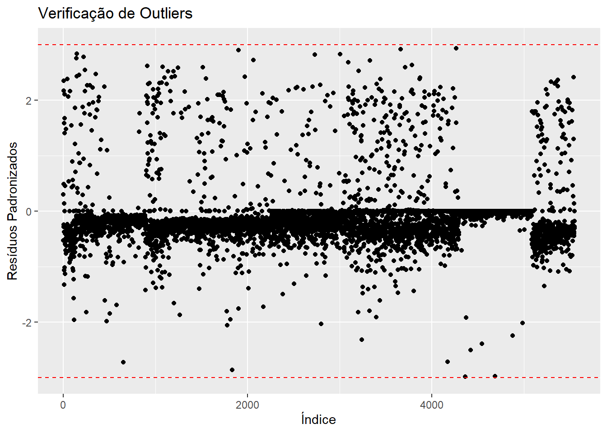
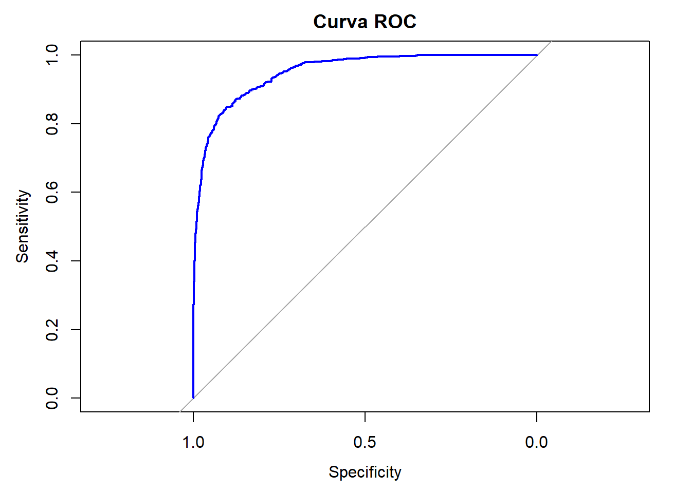
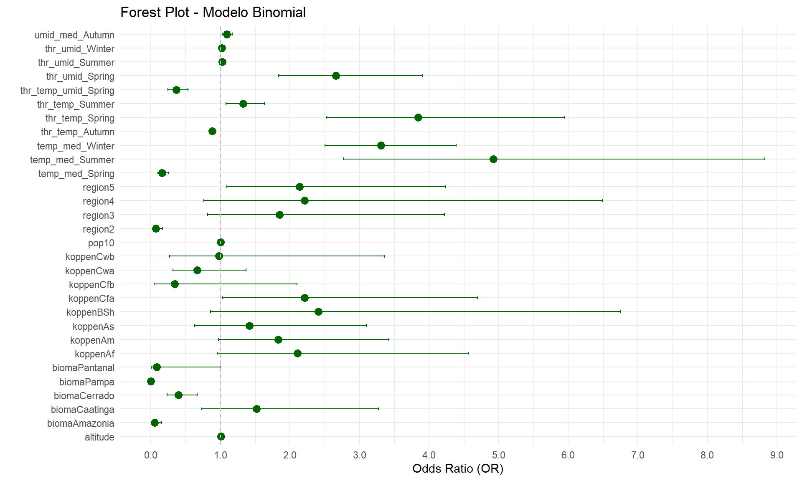
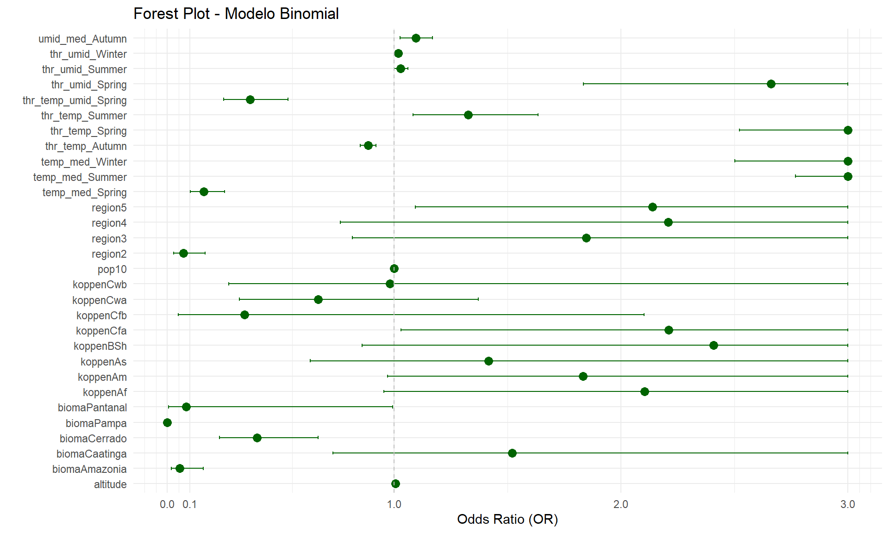

#Lendo
banco_determinantes <- read_csv2("banco_determinantes_bi.csv")
clima_org_model_10_16_season <- read_csv("clima_org_model_10_16_season.csv")
#Excluido as variáveis que não serão utilizadas
banco_determinantes <- banco_determinantes[,!(names(banco_determinantes) %in%
c("...1", "dengue_pattern_17_22"))]
clima_org_model_10_16_season <- clima_org_model_10_16_season[,!(names(clima_org_model_10_16_season) %in%
c("...1", "dengue_pattern", "precip_tot_Autumn"))]
# Renomeia a nova primeira coluna
colnames(clima_org_model_10_16_season)[1] <- "muni_code"
# Juntando
det_10_16 <- full_join(banco_determinantes, clima_org_model_10_16_season , by = "muni_code")
det_10_16 <- det_10_16[, !names(det_10_16) %in% c("pop22")]
## Removendo os bancos para a nálise ficar mais leve
remove(banco_determinantes)
remove(clima_org_model_10_16_season)Análise Regressão Logística Binomial A2 - 2010-2016
Bibliotecas
Bancos
Juntando os bancos de cada período para as modelagens dos períodos.
A precipitação total no outono (“precip_tot_Autumn”) não demonstrou uma relação significativa com a transmissão da dengue (p-valor = 0,214), o que sugere que não há evidências suficientes para incluí-la no modelo, levando à sua remoção da análise.
Análise 2010-2016
Análise do período de 2010-2016, primeira parte de uma série temporal da classificação de padrões de transmissão de todos os municípios brasileiros para dengue.
1. Arrumando variáveis
# Converter variáveis numéricas com vírgula decimal e categorizar as variáveis de texto
det_10_16 <- det_10_16 %>%
mutate(
across(where(~ all(grepl("^[0-9,.]+$", .))), ~ as.numeric(gsub(",", ".", .))),
across(where(is.character), as.factor))
det_10_16$dengue_pattern_10_16 <- as.factor(det_10_16$dengue_pattern_10_16)
# Visão geral dos dados
summary(det_10_16) muni_code region tipo_regiao altitude
Min. :1100015 Min. :1.000 metropolitana : 445 Min. : 1.67
1st Qu.:2512126 1st Qu.:2.000 nao metropolitana:5125 1st Qu.: 222.60
Median :3146280 Median :3.000 Median : 427.60
Mean :3253591 Mean :2.898 Mean : 451.24
3rd Qu.:4119190 3rd Qu.:4.000 3rd Qu.: 650.83
Max. :5300108 Max. :5.000 Max. :1601.42
koppen pop10 prop_residuo prop_esgot
Aw :1337 Min. : 805 Min. : 0.00 Min. : 0.00
Cfa :1138 1st Qu.: 5235 1st Qu.: 54.33 1st Qu.: 12.85
As : 892 Median : 10934 Median : 74.08 Median : 38.03
BSh : 420 Mean : 34278 Mean : 70.21 Mean : 42.27
Cwa : 407 3rd Qu.: 23424 3rd Qu.: 89.22 3rd Qu.: 70.44
Cfb : 405 Max. :11253503 Max. :100.00 Max. :100.00
(Other): 971 NA's :5
bioma dengue_pattern_10_16 temp_med_Autumn umid_med_Autumn
Amazonia : 503 0:4915 Min. :12.90 Min. :52.73
Caatinga :1095 1: 655 1st Qu.:19.37 1st Qu.:72.58
Cerrado :1062 Median :22.72 Median :77.93
Mata Atlantica:2741 Mean :22.25 Mean :76.60
Pampa : 160 3rd Qu.:25.36 3rd Qu.:81.53
Pantanal : 9 Max. :28.18 Max. :91.90
NA's :3 NA's :3
thr_temp_Autumn thr_umid_Autumn thr_prec_Autumn thr_temp_umid_Autumn
Min. : 0.00 Min. : 0.00 Min. : 0.00 Min. : 0.00
1st Qu.:38.57 1st Qu.:81.86 1st Qu.:18.00 1st Qu.:35.29
Median :84.43 Median :90.57 Median :23.43 Median :61.71
Mean :66.88 Mean :83.54 Mean :26.76 Mean :58.77
3rd Qu.:92.00 3rd Qu.:91.86 3rd Qu.:31.71 3rd Qu.:86.00
Max. :92.00 Max. :92.00 Max. :88.57 Max. :92.00
temp_med_Spring umid_med_Spring precip_tot_Spring thr_temp_Spring
Min. :15.39 Min. :42.80 Min. : 0.0 Min. : 0.00
1st Qu.:21.58 1st Qu.:67.09 1st Qu.: 700.2 1st Qu.:68.14
Median :24.37 Median :71.88 Median :1667.6 Median :89.14
Mean :24.06 Mean :70.76 Mean :1443.3 Mean :77.53
3rd Qu.:26.29 3rd Qu.:76.70 3rd Qu.:2005.4 3rd Qu.:90.71
Max. :31.28 Max. :90.22 Max. :3257.9 Max. :90.71
NA's :3 NA's :3
thr_umid_Spring thr_prec_Spring thr_temp_umid_Spring temp_med_Summer
Min. : 0.00 Min. : 0.00 Min. : 0.00 Min. :18.47
1st Qu.:64.29 1st Qu.:17.14 1st Qu.:46.14 1st Qu.:23.49
Median :79.50 Median :34.29 Median :62.57 Median :24.94
Mean :71.55 Mean :30.18 Mean :59.01 Mean :24.67
3rd Qu.:89.14 3rd Qu.:40.57 3rd Qu.:74.14 3rd Qu.:25.94
Max. :90.71 Max. :78.43 Max. :90.71 Max. :28.77
NA's :3
umid_med_Summer precip_tot_Summer thr_temp_Summer thr_umid_Summer
Min. :55.31 Min. : 0 Min. : 0.00 Min. : 0.00
1st Qu.:74.01 1st Qu.:1234 1st Qu.:88.43 1st Qu.:83.14
Median :77.75 Median :1861 Median :90.29 Median :87.43
Mean :76.77 Mean :1884 Mean :87.28 Mean :82.16
3rd Qu.:80.86 3rd Qu.:2400 3rd Qu.:90.29 3rd Qu.:90.14
Max. :91.60 Max. :5920 Max. :90.29 Max. :90.29
NA's :3
thr_prec_Summer thr_temp_umid_Summer temp_med_Winter umid_med_Winter
Min. : 0.00 Min. : 0.00 Min. :11.43 Min. :36.38
1st Qu.:27.57 1st Qu.:75.57 1st Qu.:18.17 1st Qu.:56.63
Median :42.14 Median :84.57 Median :21.63 Median :69.07
Mean :41.55 Mean :79.21 Mean :21.50 Mean :66.70
3rd Qu.:52.57 3rd Qu.:89.86 3rd Qu.:24.94 3rd Qu.:77.93
Max. :88.86 Max. :90.29 Max. :30.04 Max. :90.85
NA's :3 NA's :3
precip_tot_Winter thr_temp_Winter thr_umid_Winter thr_prec_Winter
Min. : 0.0 Min. : 0.00 Min. : 0.00 Min. : 0.000
1st Qu.: 149.8 1st Qu.:21.46 1st Qu.:33.29 1st Qu.: 2.714
Median : 396.7 Median :74.50 Median :75.57 Median : 9.143
Mean : 669.6 Mean :59.09 Mean :61.54 Mean :13.717
3rd Qu.:1020.8 3rd Qu.:92.00 3rd Qu.:90.43 3rd Qu.:23.429
Max. :3122.8 Max. :92.00 Max. :92.00 Max. :82.571
thr_temp_umid_Winter
Min. : 0.00
1st Qu.: 7.00
Median :16.71
Mean :31.09
3rd Qu.:49.43
Max. :92.00
2. Verificação dos pressupostos
1. Verificação de valores ausentes (NA)
Valores ausentes podem comprometer a análise, pois a regressão binomial não lida bem com dados incompletos. Se houver muitas ausências em uma variável, pode ser necessário removê-la ou imputar valores. Caso haja poucos valores faltantes, a remoção de linhas (na.omit()) pode ser suficiente. A ausência de NA indica que o banco está pronto para a modelagem.
Interpretação: Foram retiradas 8 linhas ou seja 8 municípios, são eles: xxxxxxxx
2. Análise de multicolinearidade com VIF
A multicolinearidade ocorre quando variáveis independentes estão altamente correlacionadas, dificultando a interpretação do modelo. O VIF (Variance Inflation Factor) mede essa relação: valores acima de 5 indicam uma correlação preocupante, e acima de 10 exigem ajustes, como exclusão ou transformação de variáveis.
Interpretação: Nenhum está acima de 10 , então não precisa de ajuste, porém tem multicolinearidade moderada por que está de 5 a 10, mas isso o modelo pode dar conta no ajuste.
3. Verificação de outliers nos resíduos padronizados
Outliers podem distorcer os coeficientes da regressão binomial e afetar a qualidade da predição. A análise dos resíduos padronizados permite identificar observações extremas, geralmente consideradas problemáticas quando estão fora do intervalo de -3 a 3. Se houver muitos outliers, pode ser necessário revisar a entrada de dados ou aplicar transformações.
Interpretação: Foram retiradas 12 linhas ou seja 12 municípios com 8 de categoria 0 e 4 de categoria 1. Todos com intervalos acima de -3 e 3. Presentes na tabela outliers_binomial_model_10_16.csv.
# 1. Verificação de valores ausentes
cat("Valores ausentes por variável:\n")Valores ausentes por variável:#print(colSums(is.na(det_10_16)))
# Remover linhas com NA (se necessário)
det_10_16 <- na.omit(det_10_16)
# modelo geral sem categoria de referência
binomial_model <- glm(dengue_pattern_10_16 ~ ., data = det_10_16 , family = binomial)Warning: glm.fit: probabilidades ajustadas numericamente 0 ou 1 ocorreusummary(binomial_model)
Call:
glm(formula = dengue_pattern_10_16 ~ ., family = binomial, data = det_10_16)
Coefficients:
Estimate Std. Error z value Pr(>|z|)
(Intercept) -4.747e+03 1.995e+05 -0.024 0.981019
muni_code -7.144e-07 4.438e-07 -1.610 0.107406
region 7.243e-01 3.910e-01 1.853 0.063945 .
tipo_regiaonao metropolitana 5.702e-03 2.569e-01 0.022 0.982295
altitude 5.589e-03 1.402e-03 3.986 6.72e-05 ***
koppenAm 3.539e-01 4.070e-01 0.870 0.384497
koppenAs -8.680e-02 4.989e-01 -0.174 0.861870
koppenAw -2.063e-01 4.357e-01 -0.473 0.635891
koppenBSh 2.063e-01 5.897e-01 0.350 0.726417
koppenCfa 3.001e-01 5.418e-01 0.554 0.579640
koppenCfb -1.772e+00 1.023e+00 -1.733 0.083064 .
koppenCwa -6.722e-01 5.515e-01 -1.219 0.222902
koppenCwb -3.220e-01 7.763e-01 -0.415 0.678318
pop10 6.203e-05 2.750e-06 22.560 < 2e-16 ***
prop_residuo 4.857e-03 4.179e-03 1.162 0.245129
prop_esgot 1.426e-06 2.937e-03 0.000 0.999613
biomaCaatinga 2.243e+00 6.118e-01 3.667 0.000245 ***
biomaCerrado 1.120e+00 4.572e-01 2.449 0.014311 *
biomaMata Atlantica 1.988e+00 5.332e-01 3.728 0.000193 ***
biomaPampa -2.203e+01 6.905e+02 -0.032 0.974552
biomaPantanal 4.134e-02 1.292e+00 0.032 0.974486
temp_med_Autumn -7.990e-01 4.392e-01 -1.819 0.068841 .
umid_med_Autumn -3.174e-01 9.648e-02 -3.290 0.001004 **
thr_temp_Autumn -1.330e-02 2.051e-01 -0.065 0.948310
thr_umid_Autumn 1.600e-01 1.986e-01 0.806 0.420489
thr_prec_Autumn 2.926e-02 2.516e-02 1.163 0.244880
thr_temp_umid_Autumn -8.030e-02 1.971e-01 -0.407 0.683656
temp_med_Spring -1.204e+00 4.860e-01 -2.477 0.013248 *
umid_med_Spring -8.605e-02 1.076e-01 -0.799 0.424051
precip_tot_Spring 1.047e-03 5.945e-04 1.762 0.078112 .
thr_temp_Spring 9.422e-01 2.125e-01 4.434 9.24e-06 ***
thr_umid_Spring 7.294e-01 1.864e-01 3.913 9.12e-05 ***
thr_prec_Spring 1.386e-02 3.046e-02 0.455 0.649256
thr_temp_umid_Spring -7.164e-01 1.877e-01 -3.817 0.000135 ***
temp_med_Summer 1.597e+00 4.109e-01 3.886 0.000102 ***
umid_med_Summer 2.984e-01 1.076e-01 2.773 0.005548 **
precip_tot_Summer -4.741e-04 3.534e-04 -1.342 0.179754
thr_temp_Summer 5.124e+01 2.210e+03 0.023 0.981501
thr_umid_Summer 5.093e+01 2.210e+03 0.023 0.981616
thr_prec_Summer -1.589e-02 2.604e-02 -0.610 0.541632
thr_temp_umid_Summer -5.097e+01 2.210e+03 -0.023 0.981600
temp_med_Winter 1.324e+00 4.286e-01 3.089 0.002011 **
umid_med_Winter 1.260e-01 6.237e-02 2.020 0.043370 *
precip_tot_Winter -2.274e-03 6.313e-04 -3.602 0.000316 ***
thr_temp_Winter 1.902e-02 4.608e-02 0.413 0.679784
thr_umid_Winter 1.275e-02 4.379e-02 0.291 0.771004
thr_prec_Winter 5.712e-02 3.003e-02 1.902 0.057134 .
thr_temp_umid_Winter -1.432e-02 4.508e-02 -0.318 0.750730
---
Signif. codes: 0 '***' 0.001 '**' 0.01 '*' 0.05 '.' 0.1 ' ' 1
(Dispersion parameter for binomial family taken to be 1)
Null deviance: 4027.8 on 5561 degrees of freedom
Residual deviance: 2044.8 on 5514 degrees of freedom
AIC: 2140.8
Number of Fisher Scoring iterations: 19# 2. Verificação de Multicolinearidade (VIF)
# VIF só pode ser calculado em variáveis numéricas, então convertemos as categóricas para dummies
vif_values <- vif(binomial_model)
cat("\nValores de VIF:\n")
Valores de VIF:print(vif_values) GVIF Df GVIF^(1/(2*Df))
muni_code 6.632413e+01 1 8.143963e+00
region 6.236618e+01 1 7.897226e+00
tipo_regiao 1.339253e+00 1 1.157261e+00
altitude 3.339609e+01 1 5.778935e+00
koppen 2.178546e+03 8 1.616722e+00
pop10 1.871599e+00 1 1.368064e+00
prop_residuo 2.118873e+00 1 1.455635e+00
prop_esgot 2.589149e+00 1 1.609083e+00
bioma 1.280936e+02 5 1.624623e+00
temp_med_Autumn 3.014184e+02 1 1.736140e+01
umid_med_Autumn 1.244695e+02 1 1.115659e+01
thr_temp_Autumn 3.998373e+03 1 6.323269e+01
thr_umid_Autumn 1.897305e+03 1 4.355806e+01
thr_prec_Autumn 4.047415e+01 1 6.361929e+00
thr_temp_umid_Autumn 3.896527e+03 1 6.242216e+01
temp_med_Spring 2.654170e+02 1 1.629162e+01
umid_med_Spring 2.125916e+02 1 1.458052e+01
precip_tot_Spring 5.534431e+01 1 7.439376e+00
thr_temp_Spring 7.259001e+02 1 2.694253e+01
thr_umid_Spring 4.140441e+03 1 6.434626e+01
thr_prec_Spring 8.122559e+01 1 9.012524e+00
thr_temp_umid_Spring 3.934547e+03 1 6.272597e+01
temp_med_Summer 7.122342e+01 1 8.439397e+00
umid_med_Summer 1.636894e+02 1 1.279412e+01
precip_tot_Summer 3.484258e+01 1 5.902760e+00
thr_temp_Summer 2.909903e+09 1 5.394352e+04
thr_umid_Summer 2.312600e+11 1 4.808950e+05
thr_prec_Summer 8.008732e+01 1 8.949152e+00
thr_temp_umid_Summer 2.296801e+11 1 4.792495e+05
temp_med_Winter 4.935541e+02 1 2.221608e+01
umid_med_Winter 1.698262e+02 1 1.303174e+01
precip_tot_Winter 2.173688e+01 1 4.662283e+00
thr_temp_Winter 3.536773e+02 1 1.880631e+01
thr_umid_Winter 5.496260e+02 1 2.344410e+01
thr_prec_Winter 3.990092e+01 1 6.316718e+00
thr_temp_umid_Winter 5.735843e+02 1 2.394962e+01# 3. Verificação de Outliers com Resíduos Padronizados
# Criar uma coluna de resíduos padronizados
det_10_16$residuos <- rstandard(binomial_model)
# Filtrar apenas os outliers (resíduos <= -3 ou >= 3)
outliers <- det_10_16 %>% filter(residuos <= -3 | residuos >= 3)
# Verificar o novo banco de dados com os outliers
print(outliers)# A tibble: 12 × 38
muni_code region tipo_regiao altitude koppen pop10 prop_residuo prop_esgot
<dbl> <dbl> <fct> <dbl> <fct> <dbl> <dbl> <dbl>
1 1600501 1 nao metropol… 103. Am 20509 67.0 23.9
2 2111201 2 metropolitana 11.4 As 163045 25.3 1.98
3 3109006 3 metropolitana 901. Cwb 33973 73.8 58.6
4 3144805 3 metropolitana 1119. Cwb 80998 63.8 53.9
5 3302858 3 metropolitana 195. Am 168376 96.9 70.0
6 3303203 3 metropolitana 25.7 Aw 157425 99.0 92.1
7 3304144 3 metropolitana 39.3 Am 137962 94.9 85.4
8 3503901 3 metropolitana 772. Cfb 74905 79.0 74.2
9 3510609 3 metropolitana 780. Cfb 369584 94.4 87.7
10 3523107 3 metropolitana 761. Cfb 321770 94.9 86.6
11 3552502 3 metropolitana 791. Cfb 262480 73.7 69.9
12 4202404 4 metropolitana 245. Cfa 309011 40.0 32.0
# ℹ 30 more variables: bioma <fct>, dengue_pattern_10_16 <fct>,
# temp_med_Autumn <dbl>, umid_med_Autumn <dbl>, thr_temp_Autumn <dbl>,
# thr_umid_Autumn <dbl>, thr_prec_Autumn <dbl>, thr_temp_umid_Autumn <dbl>,
# temp_med_Spring <dbl>, umid_med_Spring <dbl>, precip_tot_Spring <dbl>,
# thr_temp_Spring <dbl>, thr_umid_Spring <dbl>, thr_prec_Spring <dbl>,
# thr_temp_umid_Spring <dbl>, temp_med_Summer <dbl>, umid_med_Summer <dbl>,
# precip_tot_Summer <dbl>, thr_temp_Summer <dbl>, thr_umid_Summer <dbl>, …# Salvando banco
write.csv(outliers, "outliers_binomial_model_10_16.csv", row.names = FALSE)
# Removendo as observações que eram outliers (≤ -3 ou ≥ 3).
det_10_16<- det_10_16 %>% filter(residuos > -3 & residuos < 3)
#Visualization
ggplot(det_10_16 , aes(x = 1:nrow(det_10_16), y = residuos)) +
geom_point() +
geom_hline(yintercept = c(-3, 3), linetype = "dashed", color = "red") +
labs(title = "Verificação de Outliers", x = "Índice", y = "Resíduos Padronizados")
3. Modelo de regressão logística binomial
- Interpretação:
Para cada categoria (em relação à referência “0”), o modelo estima coeficientes (Coefficients) para cada variável preditora. Esses coeficientes representam o efeito de cada variável sobre a probabilidade de estar nas categorias 1, em comparação com 0.
# Remover colunas pelo nome
det_10_16 <- det_10_16[, !names(det_10_16) %in% c("muni_code")]
det_10_16$region <- as.factor(det_10_16$region)
# removendo as linhas com Na
det_10_16 <- det_10_16%>%
filter(!if_any(where(is.numeric), is.na))
# Definir a categoria de referência para todas as variáveis categóricas
det_10_16$dengue_pattern_10_16 <- relevel(det_10_16$dengue_pattern_10_16, ref = "0") # variável dependente
# Variáveis independentes
det_10_16$bioma <- relevel(det_10_16$bioma, ref = "Mata Atlantica")
det_10_16$tipo_regiao <- relevel(det_10_16$tipo_regiao , ref = "nao metropolitana")
det_10_16$koppen <- relevel(det_10_16$koppen, ref = "Aw")
# Modelo com tudo
# excluindo os resídos
det_10_16$residuos<- NULL
binomial_model <- glm(dengue_pattern_10_16 ~ ., data = det_10_16, family = binomial)Warning: glm.fit: probabilidades ajustadas numericamente 0 ou 1 ocorreusummary(binomial_model)
Call:
glm(formula = dengue_pattern_10_16 ~ ., family = binomial, data = det_10_16)
Coefficients:
Estimate Std. Error z value Pr(>|z|)
(Intercept) -4.361e+03 2.966e+05 -0.015 0.98827
region2 -3.012e+00 5.483e-01 -5.493 3.96e-08 ***
region3 3.238e-01 4.956e-01 0.653 0.51361
region4 6.305e-01 6.130e-01 1.028 0.30373
region5 4.687e-01 3.800e-01 1.233 0.21748
tipo_regiaometropolitana -1.939e-02 2.737e-01 -0.071 0.94352
altitude 7.205e-03 1.524e-03 4.726 2.29e-06 ***
koppenAf 4.834e-01 4.638e-01 1.042 0.29725
koppenAm 6.359e-01 3.268e-01 1.946 0.05167 .
koppenAs 5.355e-01 4.421e-01 1.211 0.22582
koppenBSh 1.053e+00 5.543e-01 1.899 0.05754 .
koppenCfa 6.196e-01 4.022e-01 1.541 0.12339
koppenCfb -1.104e+00 9.795e-01 -1.127 0.25990
koppenCwa -4.154e-01 4.012e-01 -1.035 0.30045
koppenCwb 3.575e-02 7.213e-01 0.050 0.96047
pop10 7.548e-05 3.291e-06 22.937 < 2e-16 ***
prop_residuo -4.633e-04 4.454e-03 -0.104 0.91715
prop_esgot -5.951e-04 3.390e-03 -0.176 0.86065
biomaAmazonia -2.507e+00 5.765e-01 -4.349 1.37e-05 ***
biomaCaatinga 6.434e-01 4.377e-01 1.470 0.14158
biomaCerrado -8.615e-01 2.902e-01 -2.968 0.00299 **
biomaPampa -2.743e+01 1.093e+03 -0.025 0.97998
biomaPantanal -2.982e+00 1.485e+00 -2.008 0.04467 *
temp_med_Autumn 2.778e-01 5.058e-01 0.549 0.58286
umid_med_Autumn -3.826e-02 1.116e-01 -0.343 0.73165
thr_temp_Autumn -1.990e-01 2.234e-01 -0.891 0.37292
thr_umid_Autumn -1.256e-02 2.151e-01 -0.058 0.95344
thr_prec_Autumn 1.279e-02 2.652e-02 0.482 0.62964
thr_temp_umid_Autumn 6.758e-02 2.137e-01 0.316 0.75183
temp_med_Spring -2.089e+00 5.226e-01 -3.997 6.42e-05 ***
umid_med_Spring -1.940e-01 1.164e-01 -1.667 0.09544 .
precip_tot_Spring 1.108e-03 6.301e-04 1.758 0.07877 .
thr_temp_Spring 1.328e+00 2.334e-01 5.688 1.28e-08 ***
thr_umid_Spring 1.003e+00 2.049e-01 4.896 9.79e-07 ***
thr_prec_Spring 3.228e-03 3.320e-02 0.097 0.92254
thr_temp_umid_Spring -1.006e+00 2.061e-01 -4.881 1.06e-06 ***
temp_med_Summer 1.933e+00 4.492e-01 4.302 1.69e-05 ***
umid_med_Summer 2.756e-01 1.164e-01 2.367 0.01794 *
precip_tot_Summer -9.671e-04 3.731e-04 -2.592 0.00955 **
thr_temp_Summer 4.663e+01 3.285e+03 0.014 0.98867
thr_umid_Summer 4.626e+01 3.285e+03 0.014 0.98876
thr_prec_Summer 5.878e-03 2.838e-02 0.207 0.83590
thr_temp_umid_Summer -4.629e+01 3.285e+03 -0.014 0.98876
temp_med_Winter 1.133e+00 4.393e-01 2.580 0.00988 **
umid_med_Winter 5.170e-02 6.533e-02 0.791 0.42869
precip_tot_Winter -1.997e-03 7.156e-04 -2.791 0.00525 **
thr_temp_Winter 3.926e-02 5.087e-02 0.772 0.44022
thr_umid_Winter 4.916e-02 4.904e-02 1.003 0.31608
thr_prec_Winter 6.539e-02 3.288e-02 1.989 0.04670 *
thr_temp_umid_Winter -4.104e-02 5.001e-02 -0.821 0.41189
---
Signif. codes: 0 '***' 0.001 '**' 0.01 '*' 0.05 '.' 0.1 ' ' 1
(Dispersion parameter for binomial family taken to be 1)
Null deviance: 4008.7 on 5549 degrees of freedom
Residual deviance: 1824.3 on 5500 degrees of freedom
AIC: 1924.3
Number of Fisher Scoring iterations: 204. Seleção de variáveis
O stepwise é um método automatizado de seleção de variáveis em modelos estatísticos, que adiciona ou remove preditores com base em critérios como o AIC (Akaike Information Criterion). Ele busca um equilíbrio entre ajuste e simplicidade do modelo, evitando a inclusão de variáveis irrelevantes. Na regressão binomial, interpreta-se o modelo final pelos coeficientes das variáveis selecionadas, que indicam a influência de cada preditor na probabilidade do evento analisado, além do AIC, que avalia a qualidade do ajuste.
# Criar o modelo inicial (nulo com region e pop10)
null_model <- glm(dengue_pattern_10_16 ~ region + pop10,
data = det_10_16,
family = binomial)
# Criar o modelo completo (com todas as variáveis preditoras adicionais)
full_formula <- as.formula(paste("dengue_pattern_10_16 ~ region + pop10 +",
paste(setdiff(names(det_10_16), c("dengue_pattern_10_16_10_16", "region", "pop10")),
collapse = " + ")))
full_model <- glm(full_formula, data = det_10_16, family = binomial)
# Aplicar a seleção stepwise sem mostrar o processo intermediário
step_model <- stepAIC(null_model,
scope = list(lower = null_model, upper = full_model),
direction = "both",
trace = FALSE) # <- Isso esconde as iterações
# Exibir apenas o resumo final do modelo
print(summary(step_model))
Call:
glm(formula = dengue_pattern_10_16 ~ region + pop10 + thr_temp_Spring +
bioma + koppen + temp_med_Winter + thr_temp_Autumn + temp_med_Spring +
thr_temp_Summer + thr_temp_umid_Spring + thr_umid_Spring +
thr_umid_Winter + altitude + temp_med_Summer + thr_umid_Summer +
umid_med_Autumn, family = binomial, data = det_10_16)
Coefficients:
Estimate Std. Error z value Pr(>|z|)
(Intercept) -1.721e+02 2.163e+01 -7.955 1.78e-15 ***
region2 -2.643e+00 4.461e-01 -5.926 3.11e-09 ***
region3 6.130e-01 4.188e-01 1.464 0.143276
region4 7.920e-01 5.457e-01 1.451 0.146701
region5 7.599e-01 3.448e-01 2.204 0.027546 *
pop10 7.398e-05 3.133e-06 23.614 < 2e-16 ***
thr_temp_Spring 1.347e+00 2.187e-01 6.160 7.28e-10 ***
biomaAmazonia -2.899e+00 5.426e-01 -5.344 9.10e-08 ***
biomaCaatinga 4.179e-01 3.812e-01 1.096 0.272978
biomaCerrado -9.288e-01 2.699e-01 -3.441 0.000579 ***
biomaPampa -2.555e+01 2.852e+02 -0.090 0.928612
biomaPantanal -2.479e+00 1.416e+00 -1.750 0.080095 .
koppenAf 7.438e-01 3.981e-01 1.868 0.061698 .
koppenAm 6.052e-01 3.205e-01 1.888 0.059016 .
koppenAs 3.476e-01 4.056e-01 0.857 0.391487
koppenBSh 8.788e-01 5.261e-01 1.670 0.094822 .
koppenCfa 7.928e-01 3.865e-01 2.052 0.040218 *
koppenCfb -1.076e+00 9.595e-01 -1.122 0.261966
koppenCwa -4.074e-01 3.717e-01 -1.096 0.272974
koppenCwb -1.968e-02 6.403e-01 -0.031 0.975474
temp_med_Winter 1.195e+00 1.433e-01 8.343 < 2e-16 ***
thr_temp_Autumn -1.221e-01 2.037e-02 -5.996 2.03e-09 ***
temp_med_Spring -1.829e+00 2.323e-01 -7.875 3.41e-15 ***
thr_temp_Summer 2.826e-01 1.063e-01 2.658 0.007857 **
thr_temp_umid_Spring -1.006e+00 1.949e-01 -5.164 2.42e-07 ***
thr_umid_Spring 9.785e-01 1.928e-01 5.075 3.87e-07 ***
thr_umid_Winter 1.844e-02 7.658e-03 2.408 0.016039 *
altitude 6.057e-03 1.294e-03 4.681 2.86e-06 ***
temp_med_Summer 1.594e+00 2.956e-01 5.393 6.94e-08 ***
thr_umid_Summer 2.889e-02 1.474e-02 1.960 0.050002 .
umid_med_Autumn 9.087e-02 3.337e-02 2.723 0.006475 **
---
Signif. codes: 0 '***' 0.001 '**' 0.01 '*' 0.05 '.' 0.1 ' ' 1
(Dispersion parameter for binomial family taken to be 1)
Null deviance: 4008.7 on 5549 degrees of freedom
Residual deviance: 1844.1 on 5519 degrees of freedom
AIC: 1906.1
Number of Fisher Scoring iterations: 175. Avaliação do ajuste do modelo
Pseudo R² (Nagelkerke, McFadden, Cox & Snell) : Mede a proporção da variância explicada pelo modelo.
Valores típicos: McFadden R² > 0.2 → Bom ajuste
Nagelkerke R² > 0.4 → Muito bom ajuste
Teste de Verossimilhança (Likelihood Ratio Test - LRT): Compara um modelo com e sem variáveis explicativas para ver se o modelo ajustado é significativamente melhor do que um modelo nulo. Se o p-valor for baixo (< 0.05), rejeitamos o modelo nulo, indicando que as variáveis explicativas contribuem para a predição.
Teste de Hosmer-Lemeshow : Avalia se as probabilidades previstas pelo modelo são bem ajustadas aos dados observados. Interpretação: p-valor > 0.05 → Indica bom ajuste p-valor < 0.05 → Indica que o modelo pode não estar ajustando bem.
Curva ROC e AUC (Área Sob a Curva) : Mede a capacidade do modelo de discriminar entre as classes (0 e 1).
AUC = 0.5 → Modelo sem discriminação
AUC entre 0.7 e 0.8 → Bom modelo
AUC acima de 0.8 → Excelente modelo
Matriz de Confusão e Acurácia : Avalia o desempenho do modelo na predição correta das classes.
- Acurácia = (TP + TN) / (TP + TN + FP + FN)
Resumindo:
| Método | Interpretação |
|---|---|
| Pseudo R² (Nagelkerke, McFadden) | Mede a proporção da variância explicada. Quanto maior, melhor. |
| LRT (Teste de Verossimilhança) | Verifica se o modelo ajustado é significativamente melhor que um modelo nulo. |
| Hosmer-Lemeshow | Testa se as previsões do modelo correspondem às observações reais. |
| Curva ROC e AUC | Mede a capacidade preditiva do modelo (valores > 0.8 indicam ótimo desempenho). |
| Matriz de Confusão | Avalia a acurácia da classificação do modelo. |
# Pseudo R²
pR2(step_model)fitting null model for pseudo-r2 llh llhNull G2 McFadden r2ML
-922.0365625 -2004.3348894 2164.5966540 0.5399788 0.3229549
r2CU
0.6278801 # Teste de verossimilhança (Comparação com modelo nulo)
anova(null_model, step_model, test = "Chisq")Analysis of Deviance Table
Model 1: dengue_pattern_10_16 ~ region + pop10
Model 2: dengue_pattern_10_16 ~ region + pop10 + thr_temp_Spring + bioma +
koppen + temp_med_Winter + thr_temp_Autumn + temp_med_Spring +
thr_temp_Summer + thr_temp_umid_Spring + thr_umid_Spring +
thr_umid_Winter + altitude + temp_med_Summer + thr_umid_Summer +
umid_med_Autumn
Resid. Df Resid. Dev Df Deviance Pr(>Chi)
1 5544 2542.1
2 5519 1844.1 25 698.02 < 2.2e-16 ***
---
Signif. codes: 0 '***' 0.001 '**' 0.01 '*' 0.05 '.' 0.1 ' ' 1# Teste de Hosmer-Lemeshow
hoslem.test(det_10_16$dengue_pattern_10_16, fitted(step_model))Warning in Ops.factor(1, y): '-' não faz sentido para fatores
Hosmer and Lemeshow goodness of fit (GOF) test
data: det_10_16$dengue_pattern_10_16, fitted(step_model)
X-squared = NA, df = 8, p-value = NA#Curva ROC e AUC (Área Sob a Curva)
roc_curve <- roc(det_10_16$dengue_pattern_10_16, fitted(step_model))Setting levels: control = 0, case = 1Setting direction: controls < casesplot(roc_curve, col = "blue", main = "Curva ROC")
auc(roc_curve) # Calcula a AUCArea under the curve: 0.9502# Matriz de Confusão e Acurácia
predicoes <- ifelse(fitted(step_model) > 0.5, 1, 0)
conf_matrix <- confusionMatrix(as.factor(predicoes), as.factor(det_10_16$dengue_pattern_10_16))
print(conf_matrix)Confusion Matrix and Statistics
Reference
Prediction 0 1
0 4826 284
1 74 366
Accuracy : 0.9355
95% CI : (0.9287, 0.9418)
No Information Rate : 0.8829
P-Value [Acc > NIR] : < 2.2e-16
Kappa : 0.6373
Mcnemar's Test P-Value : < 2.2e-16
Sensitivity : 0.9849
Specificity : 0.5631
Pos Pred Value : 0.9444
Neg Pred Value : 0.8318
Prevalence : 0.8829
Detection Rate : 0.8695
Detection Prevalence : 0.9207
Balanced Accuracy : 0.7740
'Positive' Class : 0
5. Gerando gráfico Odds Ratio
Or, IC95%, p-valor
# Salvar o modelo final
modelo_final <- step_model
# Calcular Odds Ratio, Intervalo de Confiança e p-valor
odds_ratio_table <- exp(cbind(OR = coef(modelo_final), confint(modelo_final)))
p_values <- summary(modelo_final)$coefficients[, 4] # Extrair p-valores
# Transformar em data frame para melhor visualização
odds_ratio_df <- as.data.frame(odds_ratio_table)
odds_ratio_df$`p-valor` <- p_values # Adicionar p-valor à tabela
# Nomear colunas
colnames(odds_ratio_df) <- c("Odds Ratio", "IC 95% Lower", "IC 95% Upper", "p-valor")
# Criar uma tabela formatada
kable(odds_ratio_df, digits = 3, caption = "Odds Ratio, Intervalo de Confiança (95%) e p-valor") %>%
kable_styling(full_width = FALSE, bootstrap_options = c("striped", "hover"))| Odds Ratio | IC 95% Lower | IC 95% Upper | p-valor | |
|---|---|---|---|---|
| (Intercept) | 0.000 | 0.000 | 0.000 | 0.000 |
| region2 | 0.071 | 0.029 | 0.168 | 0.000 |
| region3 | 1.846 | 0.816 | 4.222 | 0.143 |
| region4 | 2.208 | 0.763 | 6.492 | 0.147 |
| region5 | 2.138 | 1.094 | 4.237 | 0.028 |
| pop10 | 1.000 | 1.000 | 1.000 | 0.000 |
| thr_temp_Spring | 3.845 | 2.522 | 5.947 | 0.000 |
| biomaAmazonia | 0.055 | 0.019 | 0.158 | 0.000 |
| biomaCaatinga | 1.519 | 0.731 | 3.272 | 0.273 |
| biomaCerrado | 0.395 | 0.231 | 0.665 | 0.001 |
| biomaPampa | 0.000 | 0.000 | 0.000 | 0.929 |
| biomaPantanal | 0.084 | 0.005 | 0.994 | 0.080 |
| koppenAf | 2.104 | 0.955 | 4.560 | 0.062 |
| koppenAm | 1.832 | 0.972 | 3.421 | 0.059 |
| koppenAs | 1.416 | 0.631 | 3.101 | 0.391 |
| koppenBSh | 2.408 | 0.858 | 6.747 | 0.095 |
| koppenCfa | 2.210 | 1.030 | 4.692 | 0.040 |
| koppenCfb | 0.341 | 0.049 | 2.102 | 0.262 |
| koppenCwa | 0.665 | 0.319 | 1.370 | 0.273 |
| koppenCwb | 0.981 | 0.272 | 3.355 | 0.975 |
| temp_med_Winter | 3.305 | 2.501 | 4.387 | 0.000 |
| thr_temp_Autumn | 0.885 | 0.850 | 0.921 | 0.000 |
| temp_med_Spring | 0.161 | 0.101 | 0.252 | 0.000 |
| thr_temp_Summer | 1.327 | 1.083 | 1.635 | 0.008 |
| thr_temp_umid_Spring | 0.366 | 0.248 | 0.532 | 0.000 |
| thr_umid_Spring | 2.661 | 1.835 | 3.909 | 0.000 |
| thr_umid_Winter | 1.019 | 1.003 | 1.034 | 0.016 |
| altitude | 1.006 | 1.004 | 1.009 | 0.000 |
| temp_med_Summer | 4.925 | 2.769 | 8.828 | 0.000 |
| thr_umid_Summer | 1.029 | 1.000 | 1.060 | 0.050 |
| umid_med_Autumn | 1.095 | 1.026 | 1.170 | 0.006 |
#write.csv(odds_ratio_df, "odds_ratio_tabela_10_16.csv", row.names = FALSE)Figura
# geral
# Extraindo os coeficientes do modelo multinomial com intervalo de confiança
tidy_model <- broom::tidy(modelo_final, conf.int = TRUE)
# Filtrando apenas os coeficientes das variáveis preditoras (removendo a categoria base)
tidy_model <- tidy_model %>%
filter(term != "(Intercept)")
# Convertendo os coeficientes log-OR para OR e arredondando para 3 casas decimais, sem limites
tidy_model <- tidy_model %>%
mutate(
estimate = round(exp(estimate), 3), # Convertendo log-OR para OR
conf.low = round(exp(conf.low), 3), # Convertendo intervalo inferior
conf.high = round(exp(conf.high), 3) # Convertendo intervalo superior
)
# Definindo os valores do eixo X dinamicamente, sem limite fixo
x_breaks <- seq(0, max(tidy_model$conf.high, na.rm = TRUE) + 1, by = 1)
x_labels <- format(round(x_breaks, 1), nsmall = 1) # Formata com 1 casa decimal
# Criando o gráfico de forest plot sem limite artificial no eixo X
ggplot(tidy_model, aes(x = estimate, y = term)) +
geom_point(color = "darkgreen", size = 3) + # Pontos dos ORs
geom_errorbarh(aes(xmin = conf.low, xmax = conf.high), height = 0.2, color = "darkgreen") + # Barras de erro
geom_vline(xintercept = 1, linetype = "dashed", color = "gray") + # Linha vertical em OR = 1
scale_x_continuous(
breaks = x_breaks,
labels = x_labels
) +
labs(x = "Odds Ratio (OR)", y = "", title = "Forest Plot - Modelo Binomial") +
theme_minimal()
## Com limites de -3 e 3
# Extraindo os coeficientes do modelo multinomial com intervalo de confiança
tidy_model <- broom::tidy(modelo_final, conf.int = TRUE)
# Filtrando apenas os coeficientes das variáveis preditoras (removendo a categoria base)
tidy_model <- tidy_model %>%
filter(term != "(Intercept)")
# Convertendo os coeficientes log-OR para OR e arredondando para 3 casas decimais
tidy_model <- tidy_model %>%
mutate(
estimate = round(pmin(exp(estimate), 3), 3), # Limita os valores acima de 3 para 3
conf.low = round(pmax(exp(conf.low), 0), 3), # Garante que conf.low nunca seja menor que 0
conf.high = round(pmin(exp(conf.high), 3), 3) # Limita os valores acima de 3 para 3
)
# Definindo os valores fixos do eixo X
x_breaks <- c(0, 0.1, 1, 2, 3) # Apenas 1 casa decimal
x_labels <- format(round(x_breaks, 1), nsmall = 1) # Formata com 1 casa decimal
# Criando o gráfico de forest plot
ggplot(tidy_model, aes(x = estimate, y = term)) +
geom_point(color = "darkgreen", size = 3) + # Pontos dos ORs
geom_errorbarh(aes(xmin = conf.low, xmax = conf.high), height = 0.2, color = "darkgreen") + # Barras de erro
geom_vline(xintercept = 1, linetype = "dashed", color = "gray") + # Linha vertical em OR = 1
scale_x_continuous(
breaks = x_breaks,
labels = x_labels,
limits = c(0, 3) # Limita a escala até 3
) +
labs(x = "Odds Ratio (OR)", y = "", title = "Forest Plot - Modelo Binomial") +
theme_minimal()